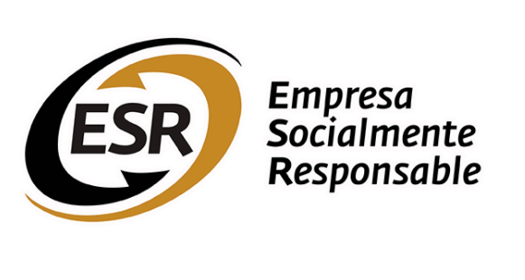

Quiénes Somos
En NutreRed, estamos comprometidos en hacer una diferencia significativa en la lucha contra el desperdicio de alimentos y en mejorar la calidad de vida de comunidades vulnerables. Somos un puente entre empresas y restaurantes que tienen alimentos excedentes y organizaciones benéficas, asilos y comedores comunitarios que necesitan apoyo.

Nuestra Misión
Nuestra misión es simple pero poderosa: reducir el desperdicio de alimentos y alimentar a quienes más lo necesitan. Conectamos a empresas y restaurantes con corazón a organizaciones locales, asegurando que los alimentos excedentes lleguen a manos hambrientas en lugar de desperdiciarse.
Lo Que Hacemos
- Facilitamos conexiones entre donantes y beneficiarios.
- Coordinamos la logística de recolección y entrega de alimentos.
- Promovemos la sostenibilidad al reducir el desperdicio de alimentos.
- Contribuimos al bienestar de las comunidades locales.